Adam Mark
Frontend lead / UI architect
About me
I'm a frontend lead and UI architect with extensive experience developing elegant, enterprise-grade web applications. I specialize in building high-performance data visualization tools and dashboards.
Recent work
From 2015 to 2020, I designed and developed web applications for a medical-grade wearable device, using React, Redux and D3.
- 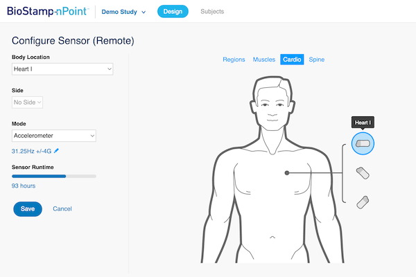 Article: Building a configuration UI for a wearable device
- 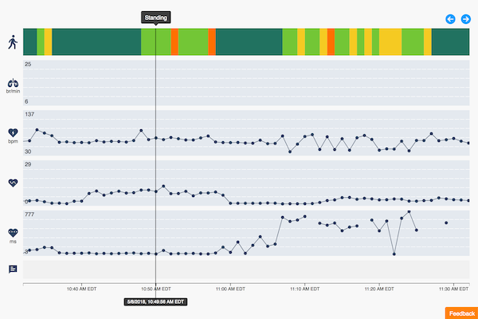 Article: Developing custom data visualizations for a biometric system
- 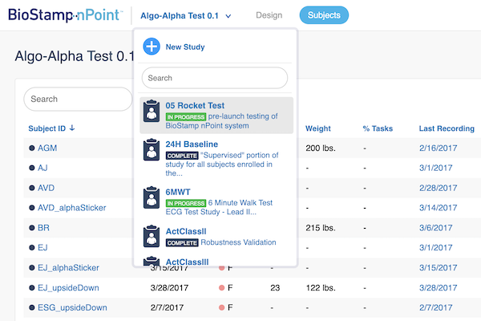 Article: Creating a foundational UI framework
- 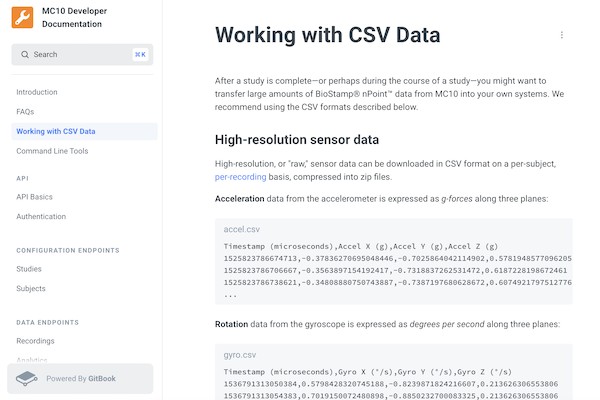 Writing sample: “Working with CSV Data”
In 2020, I built a JavaScript SDK for the same wearable device, using Web Bluetooth, Protocol Buffers, SQLite and IndexedDB.
- 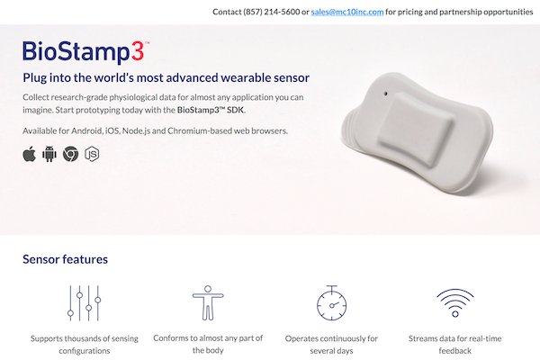 Article: Developing a JavaScript SDK for a biometric sensor
- 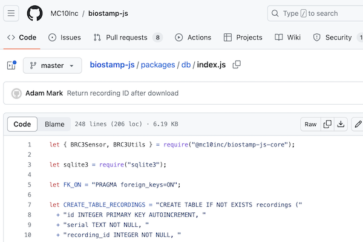 Code sample: BioStamp3 JavaScript SDK
From 2020 to 2023, I developed dashboards and mapping tools for a warehouse automation system, using TypeScript, React, GraphQL and WebSockets.
- 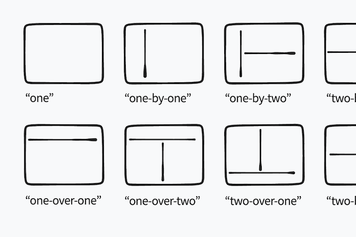 Article: Designing a layout system for big-screen dashboards
- 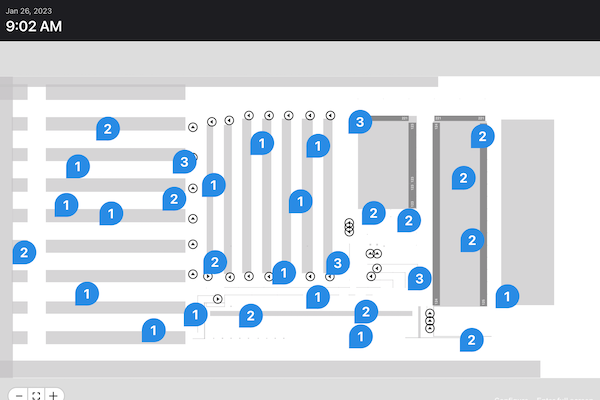 Article: Clustering markers on a warehouse map
- 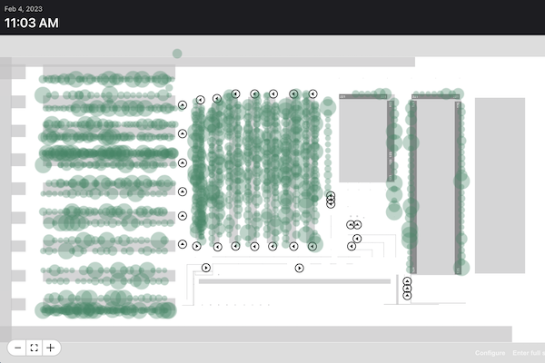 Article: Improving map performance with Canvas
- 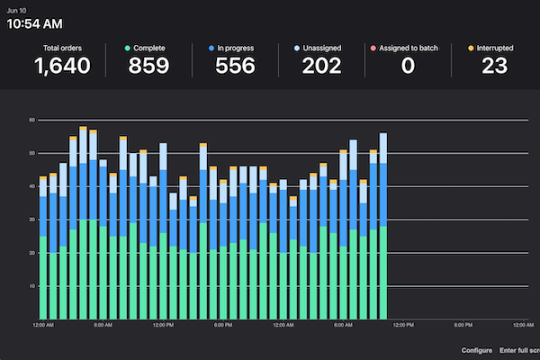 Article: Selecting the right data visualization library
- 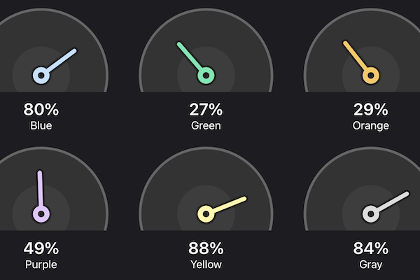 Article: Creating an animated SVG component in React
- 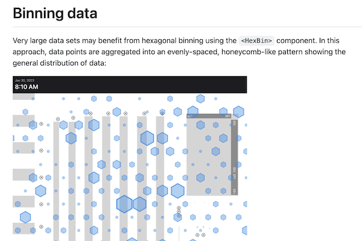 Writing sample: “Working with maps”
FAQs
- Do you have “full stack” experience?
- Yes! I've worked in a variety of backend technologies, from Ruby on Rails to GraphQL, but I prefer building UIs. Only a frontend specialist can keep up with the proliferation of Web APIs.
- Do you have management experience?
- Yes! I've led small teams of developers in both product development and agency environments.
- Do you have design experience?
- Yes! I started my career as a news designer before moving into UI design and then into engineering. Today, my design skills make me a better engineer.
- Do you have any hobbies?
- Yes! I play piano and make bowls.
- Where are you?
- I live in the Boston area with my wife, twin children and dog.
Connect with me
Find me on LinkedIn